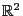
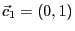
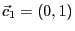
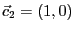

Next: Stability and convergence Up: Instability and the geometry Previous: Optimizing over the circle:
Now we move to our second thought experiment: Consider a feasible region consisting of a triangle in  with a very wide base and very short height, as depicted here:
In theory, the optimal solution should be the apex of the triangle,
but assume that we randomly perturb both the right-hand side and the
objective function with terms in the order of  . What will
happen with the numerical solution?
. What will
happen with the numerical solution?
To perform the experiment, we execute the code thinOpt.py, where we perform a series of re-optimizations with different perturbations as described above. To be more precise, whenever the new computed solution is further from the mathetical solution by more than it has been in previous trials, we print:
Sample output is shown below:
New maxdiff 4e+16 Iter 0 Kappa 3.31072 Violations: 0 0 0 New maxdiff 4e+16 Iter 1 Kappa 3.31072 Violations: 0 0 0 New maxdiff 4e+16 Iter 2 Kappa 3.31072 Violations: 0 0 0 New maxdiff 4e+16 Iter 7 Kappa 3.31072 Violations: 0 0 0 New maxdiff 4e+16 Iter 83 Kappa 3.31072 Violations: 0 0 2.64698e-23 New maxdiff 4e+16 Iter 194 Kappa 3.31072 Violations: 0 0 0 New maxdiff 4e+16 Iter 1073 Kappa 3.31072 Violations: 0 1.13687e-13 0 New maxdiff 4e+16 Iter 4981 Kappa 3.31072 Violations: 0 0 0 New maxdiff 4e+16 Iter 19514 Kappa 3.31072 Violations: 0 0 0 New maxdiff 4e+16 Iter 47117 Kappa 3.31072 Violations: 0 0 0 New maxdiff 4e+16 Iter 429955 Kappa 3.31072 Violations: 0 0 0 New maxdiff 4e+16 Iter 852480 Kappa 3.31072 Violations: 0 0 0
Results look very different from what we saw in our first test. The distance
between the solution to the unperturbed model and the solution to the
perturbed one is huge, even from the very first iteration.
Also, the  values are relatively small, and the reported
primal, dual, and bound violations are almost zero. So, what happened?
Note that when we choose
, we are choosing an optimal
point where a small tilting of the objective function may move us to
another extreme point very far away, and hence the large norm.
This is possible because the region is very large and, in principle,
without any bounds, i.e. this is related to the case of
values are relatively small, and the reported
primal, dual, and bound violations are almost zero. So, what happened?
Note that when we choose
, we are choosing an optimal
point where a small tilting of the objective function may move us to
another extreme point very far away, and hence the large norm.
This is possible because the region is very large and, in principle,
without any bounds, i.e. this is related to the case of
 -optimal solutions and very long sides.
-optimal solutions and very long sides.
Again, we encourage you to play with this example. For example, what would happen if the nominal objective function is ?